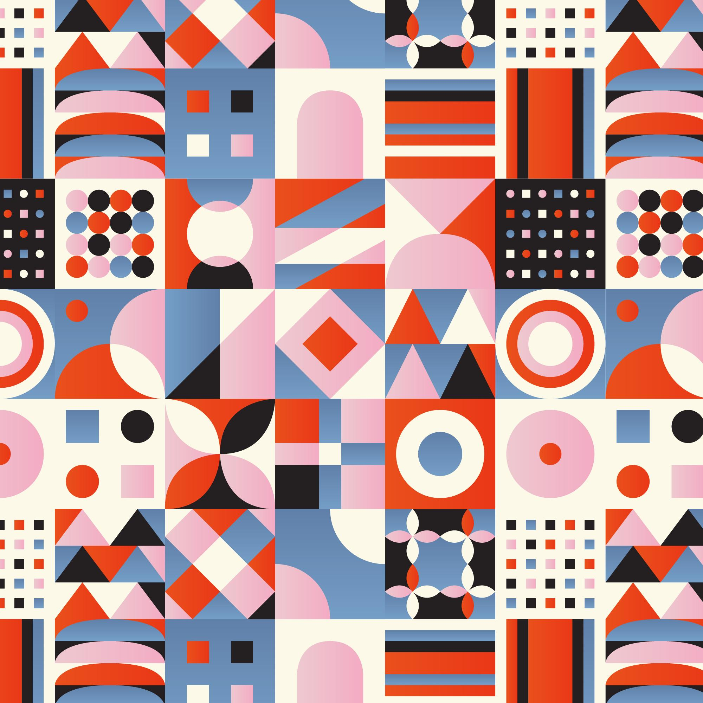

Glisse pour plus savoir a propos

Anonymat
Personne qui appelle est libre de se presenter ou de garder l'anonymat.L'ecoute active et objective de nos about-psychologues
ecourage les personnes en plus reticentes a sauter le pas.A noter que le respet du secret professionnel et de la confidantalitédes données de patients est toujours mises,qu'il s'agisse d'une personne anonyme ou non.
Pas de deplacement
Pas besoin de se déplacer pour nous parler!Plus de deplacement fatiguant et/ou attente dans des cabinnets et surtout pouvour
a une pesonne competente meme au milieu de la nuit.Tout le monde peut avoir acées a nos services,y compris les personnes a mobilité reduites
Horaires
Nos horraires de travail(les horaires de travail sont de 09 a 21h)ont été fixés de maniere a etre en diaapson avec le rythme de vies et des
citoyens(prises en consideration des gens qui travaillent en journée,manque de temps)mais egalement pour pouvoir prendre en charge les cas de crise de panique ou d'angoisse qui ont tendance a se manifester la nuit